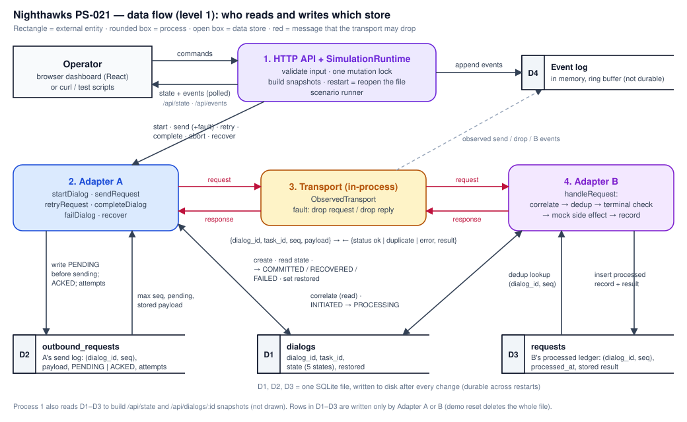
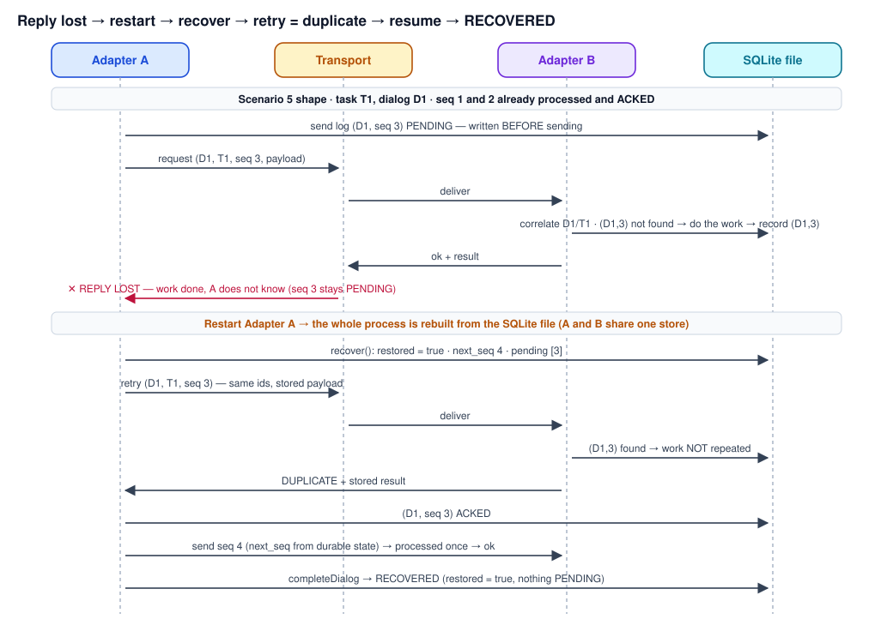

A3-PS021-TC405
Experimental Dialog Correlation and Recovery Across Agent Adapters
Anuragy Singh Yadav anuragysinghyadav@gmail.com
Amit Kushwaha amitkushwaha0804@gmail.com
Dr Nidhi Srivastava nsrivastava2@lko.amity.edu
AIORI Hackathon 3 · Category: 6G & Future Networks · Team Nighthawks
October 9, 2026
AIORI 3Abstract
Problem Description
Agents built on different frameworks (e.g. Anthropic's MCP, Google's A2A) track conversation context in their own ways. When an agent restarts or the network disconnects mid-task, there is no standard dialog tracking, so context is lost and operations are repeated.
Key issues
- No shared dialog identity: a retried message cannot be matched to the dialog / task it belongs to.
- Context lost on restart: in-memory state disappears; the task is orphaned or restarted from scratch.
- Ambiguous retries: the sender cannot tell "request lost" from "reply lost"; retrying can repeat a side effect.
- Task identity drift: new identifiers after recovery break the link to the original task.
- Implicit lifecycle: without explicit states nobody can tell running / finished / failed, and finished tasks may accept new work.
- No settled standard: IETF agent-protocol work is still emerging, so any schema used today is experimental.
A. S. Yadav, A. Kushwaha, N. Srivastava • A3-PS021-TC405 • October 9, 2026
AIORI 3Abstract
Problem Description (2/2) — failure analysis
From the sender's side "request lost" and "reply lost" look identical (silence). The only safe move is to retry, so the receiver must recognise a retry of work it already did.
| Failure point | What the sender sees | What actually happened | Risk without dialog tracking |
|---|
| Request lost in transit | No reply | Receiver never got it | Retry is safe, but the sender cannot know that |
| Reply lost in transit | No reply | Receiver already did the work | Retry → duplicate side effect |
| Receiver restarts | No reply / errors | Receiver memory wiped | Duplicates not recognised; context lost |
| Sender restarts mid-task | Sender memory wiped | Task half done | Task restarted or abandoned; identity lost |
| Several dialogs active | A retry arrives | It belongs to one dialog | Retry applied to the wrong task |
PS-021 asks for: 2 mock agent adapters · 1 dialog-state schema · task identity across restarts · request deduplication · 5 disconnect/retry scenarios · explicit lifecycle states and transitions · a clearly labelled experimental schema · no claim of a final IETF standard, complete MCP/A2A interoperability or universal exactly-once delivery.
A. S. Yadav, A. Kushwaha, N. Srivastava • A3-PS021-TC405 • October 9, 2026
AIORI 3Background
Background
Two bodies of knowledge meet here: how agent protocols identify tasks and sessions, and the classic distributed-systems rules for retries over unreliable links.
- Agent protocols identify work locally. MCP encodes messages as JSON-RPC and may assign an
Mcp-Session-Id per client–server session [2,3]. A2A identifies a Task by a server-generated id and groups interactions with a contextId, with its own task states [4]. Each defines identity inside its own protocol, not across an adapter boundary.
- The IETF has chartered this gap. The agentproto working group (ART area) plans a baseline agentic dialog management protocol covering dialog identifiers, correlation and lifecycle carried over existing protocols; no drafts are adopted yet (first milestone Dec 2026) [1].
- Unreliable links make retries unavoidable. Two parties cannot be certain of agreement over a channel that can lose messages [7], so senders retry ("at-least-once").
- Retries are safe only if the receiver is idempotent. HTTP defines idempotent methods [5]; for non-idempotent requests an Idempotency-Key header has been proposed [6]. Our receiver uses the key
(dialog_id, seq).
- Deduplication must be durable. A dedup table kept only in memory is lost on restart — exactly when retries arrive.
A. S. Yadav, A. Kushwaha, N. Srivastava • A3-PS021-TC405 • October 9, 2026
AIORI 3Background
Background (2/2) — concepts used in this project
Terms as they are implemented in the prototype (source of truth: backend/src/types/index.ts, backend/src/db/schema.sql).
| Concept | Meaning in the prototype |
|---|
Dialog / dialog_id | One bounded exchange between Adapter A and Adapter B about one task; the correlation key (generated by Adapter A). |
Task / task_id | The unit of work the dialog carries; stored once; a request whose task_id differs is rejected (TASK_MISMATCH). |
Logical request / seq | Integer > 0 per dialog. (dialog_id, seq) is the deduplication key; a retry keeps the same ids and payload. |
| Lifecycle | Exactly 5 states: INITIATED, PROCESSING, COMMITTED, RECOVERED, FAILED; the last three are terminal. |
| Durable state | Three tables in one SQLite file, written to disk after every change: dialogs, outbound_requests (A), requests (B). |
| Recovery | After a restart, Adapter A reloads every unfinished dialog, marks it restored, and derives the next seq and the unanswered requests from disk. |
| Duplicate-side-effect prevention | A request already recorded as processed is answered from the stored result and not executed again. This is not exactly-once delivery (see limitations). |
A. S. Yadav, A. Kushwaha, N. Srivastava • A3-PS021-TC405 • October 9, 2026
AIORI 3Literature & RFC Review
Literature & RFC Review (1/2) — agent protocols
Only the most relevant standards and proposals; what each provides and what it leaves open for this problem.
| Source | What it provides | Relevance / gap for PS-021 |
|---|
| IETF agentproto WG charter [1] | Active WG (ART). Plans an agentic dialog management protocol: dialog correlation, lifecycle, bindings to HTTP/QUIC/WebTransport; "neither replaces application-layer agent communication protocols nor defines a new transport protocol". | Defines exactly our topic, but no adopted draft yet → we use an experimental schema "inspired by" it, not an implementation of it. |
| MCP specification [2,3] | JSON-RPC message encoding; optional Mcp-Session-Id; SSE streams resumable with Last-Event-ID per stream. | Session and stream scoped; no cross-framework dialog/task id or durable request dedup. |
| A2A specification [4] | Task id (server-generated), contextId grouping, task states; terminal states (completed, failed, canceled, rejected) accept no further messages. | Confirms explicit lifecycle + terminal protection; identity is internal to A2A. |
| JSON-RPC 2.0 [8] | The id member correlates a response to its request. | Per-call correlation only; not a dialog or task identity across restarts. |
A. S. Yadav, A. Kushwaha, N. Srivastava • A3-PS021-TC405 • October 9, 2026
AIORI 3Literature & RFC Review
Literature & RFC Review (2/2) — retries and idempotency
| Source | What it provides | Relevance / gap for PS-021 |
|---|
| RFC 9110 HTTP Semantics [5] | Defines idempotent methods: repeating them has the same intended effect. | Basis for safe retries; agent task requests are generally not idempotent. |
| Idempotency-Key I-D [6] | httpapi WG draft (v07, now expired): a client key that makes POST/PATCH retries fault-tolerant. | Same idea as our (dialog_id, seq) key, applied per dialog. |
| Akkoyunlu et al. 1975 [7] | Agreement over a lossy channel cannot be guaranteed ("two generals"). | Why we claim duplicate prevention, not exactly-once. |
Takeaways applied in our design
- Carry an explicit dialog identity across the adapter boundary (the agentproto direction):
dialog_id + task_id.
- Give every logical request an idempotency key —
(dialog_id, seq) — and store it durably, so it survives restarts.
- Use explicit lifecycle states where terminal states refuse new work (as A2A does for its tasks).
- Claim only duplicate-side-effect prevention; exactly-once cannot be guaranteed over lossy links [7].
A. S. Yadav, A. Kushwaha, N. Srivastava • A3-PS021-TC405 • October 9, 2026
AIORI 3Proposed Solution
Proposed Solution
A prototype with two mock agent adapters that share one experimental dialog-state schema (v0.1-experimental) and one durable SQLite store.
- Adapter A (initiator): starts dialogs, assigns
seq, writes each request to its send log as PENDING before sending, retries with the same ids and payload, completes or aborts the task, and recovers after a restart.
- Transport (in-process): delivers A→B and can drop the request or the reply (fault injection).
- Adapter B (receiver): correlate (
dialog_id + task_id) → dedup on (dialog_id, seq) → refuse new work on finished dialogs → run the mock side effect → record result.
- Durable store:
dialogs, outbound_requests, requests in one SQLite file (sql.js), saved after every change.
- Recovery: on every start/restart
recover() reloads INITIATED/PROCESSING dialogs, sets restored, next seq = max(seq)+1, unanswered seqs listed for retry.
- Control & visibility: Express HTTP API (14 endpoints), React dashboard, live event trace, five scripted scenarios.
- Stack: Node.js + TypeScript, Express, sql.js, zod, React + Vite, Vitest, Playwright.
A. S. Yadav, A. Kushwaha, N. Srivastava • A3-PS021-TC405 • October 9, 2026
AIORI 3Proposed Solution
Proposed Solution (2/4) — explicit lifecycle

Figure: Dialog lifecycle — 5 states, valid transitions and their triggers (generated and checked against VALID_TRANSITIONS in the code). COMMITTED, RECOVERED and FAILED are terminal; Adapter B refuses new work for them (DIALOG_TERMINAL) but still replays stored answers.
A. S. Yadav, A. Kushwaha, N. Srivastava • A3-PS021-TC405 • October 9, 2026
AIORI 3Proposed Solution
Proposed Solution (3/4) — five disconnect / retry scenarios
Each scenario is a backend script, an HTTP call sequence and a UI demo; all pass at every test level (runs of 9 Oct 2026).
| Scenario | What fails | What the system does | Final state |
|---|
| 1 Multiple dialogs + retry | D2's request lost (D1 also open) | Retry correlated to D2/T2 and processed once; D1 untouched | D2 COMMITTED, D1 INITIATED |
| 2 Request lost → retry | Request never reaches B | Retry is new for B → processed once | COMMITTED |
| 3 Reply lost → duplicate | B did the work, reply lost | Retry recognised as duplicate; stored result returned; work not repeated | COMMITTED |
| 4 Adapter B restart | Reply lost, then process restart | Same dialog/task reloaded from the file; retry = duplicate | RECOVERED |
| 5 Adapter A restart mid-task | seq 3 reply lost, then restart | Recovery reports next seq 4, pending [3]; retry 3 = duplicate; seq 4 processed | RECOVERED |
"Restart A" and "Restart B" both restart the whole backend process: the two adapters share one store, so both are rebuilt from the SQLite file. A real OS-process kill and restart is also tested (E2E test E).
A. S. Yadav, A. Kushwaha, N. Srivastava • A3-PS021-TC405 • October 9, 2026
AIORI 3Proposed Solution
Proposed Solution (4/4) — pseudocode snippet
# Adapter A · sendRequest / retryRequest
sendRequest(dialog_id, payload):
if state(dialog_id) is terminal: error DIALOG_TERMINAL
seq = send_log.max_seq(dialog_id) + 1 # from disk
send_log.insert(dialog_id, seq, payload, PENDING)
return deliver(dialog_id, task_id, seq, payload)
retryRequest(dialog_id, seq):
row = send_log.get(dialog_id, seq) # same payload
row.attempts += 1
return deliver(dialog_id, task_id, seq, row.payload)
deliver(req):
response = transport.send(req) # may be lost
if response in (ok, duplicate):
send_log.mark(req.seq, ACKED)
# Adapter A · recover (every start / restart)
for d in dialogs where state in (INITIATED, PROCESSING):
d.restored = true
next_seq = send_log.max_seq(d) + 1
pending = send_log.pending(d) # retry these
# Adapter B · handleRequest (order matters)
handleRequest(req):
dialog = correlate(req.dialog_id, req.task_id)
rec = processed.get(req.dialog_id, req.seq)
if rec: return duplicate(rec.result) # not re-run
if dialog is terminal: return error(DIALOG_TERMINAL)
result = run_side_effect(req.payload)
# ── crash window: done, not yet recorded
processed.insert(req.dialog_id, req.seq, result)
if dialog.state == INITIATED:
transition(dialog, PROCESSING)
return ok(result)
# Adapter A · completeDialog
if send_log.pending(dialog): error PENDING_REQUESTS
transition(dialog,
RECOVERED if dialog.restored else COMMITTED)
# Sources: backend/src/adapters/AdapterA.ts,
# backend/src/adapters/AdapterB.ts
# Full version: docs/PSEUDOCODE.md
A. S. Yadav, A. Kushwaha, N. Srivastava • A3-PS021-TC405 • October 9, 2026
AIORI 3Solution Optimization
Optimization Proposed
Enhancements made during development; "before" is the earlier baseline in our own repository (commit d7b6d65, 8 Oct 2026), "after" is the final code.
| Aspect | Before (baseline) | After (final prototype) |
|---|
Next seq after Adapter A restart | Held only in memory; tests had to pass the next seq by hand | Derived from the durable send log: max(seq) + 1 |
| In-flight request after restart | Unknown — nothing recorded which request was unanswered | Written as PENDING before sending; recover() lists pending seqs |
| Retry payload | Caller could send a different payload under the same seq | Replayed from the send log — a retry is always the same logical request |
| Finished dialogs | Still accepted new work and ran side effects | New work refused (DIALOG_TERMINAL); stored answers still replayed |
| Lifecycle use | COMMITTED only via a test helper; RECOVERED and FAILED never reached | All 5 states reached by normal flows (complete, restart + complete, retry budget, abort) |
| Retry limit | None | After 5 unanswered attempts the dialog moves to FAILED |
| Control / evidence | Unit tests only; dashboard was a separate browser simulation | HTTP API + dashboard driven by the real backend; 16 browser E2E tests |
A. S. Yadav, A. Kushwaha, N. Srivastava • A3-PS021-TC405 • October 9, 2026
AIORI 3Solution Optimization
Optimization Proposed (2/2) — measured effect
Recorded results (docs/TEST_RESULTS.md, runs of 9 Oct 2026, Windows 11, Node.js 24.14.1, Edge 154).
| Test level | Count | Result |
|---|
| Backend unit + integration (Vitest) | 265 | 265 passed |
| — of which HTTP API (supertest) | 62 | 62 passed |
| Frontend unit checks | 65 | 65 passed |
| Client smoke vs real backend | 6 steps | 6 passed |
| Browser E2E (Playwright, Edge) | 16 | 16/16 in 3 consecutive runs |
| Fault injected on purpose (then reverted) | E2E result |
|---|
| Backend duplicate check disabled | 10 tests failed — the work ran twice |
| Dashboard duplicate message changed | 3 tests failed |
| Dashboard reconnect removed | 1 test failed |
With the duplicate check in place, every scenario keeps the side-effect count at one per logical request; without it, retries after a lost reply repeat the work. This is the "before vs after" of request deduplication, measured.
A. S. Yadav, A. Kushwaha, N. Srivastava • A3-PS021-TC405 • October 9, 2026
AIORI 3Architecture Design (UML Diagram)
Solution Architecture & Design

Figure: System architecture (component view) — one Node.js process, one SQLite file; component names match the source code.
A. S. Yadav, A. Kushwaha, N. Srivastava • A3-PS021-TC405 • October 9, 2026
AIORI 3Data Flow Diagram
Data Flow Diagram

Figure: Data Flow Diagram (DFD, level 1) — which process reads and writes which store.
A. S. Yadav, A. Kushwaha, N. Srivastava • A3-PS021-TC405 • October 9, 2026
AIORI 3Data Flow Diagram
Data Flow Diagram (2/2) — reply lost, restart, resume

Figure: Message flow for Scenario 5: reply lost → retry = duplicate → restart → recover → resume → RECOVERED.
A. S. Yadav, A. Kushwaha, N. Srivastava • A3-PS021-TC405 • October 9, 2026
AIORI 3Deployment Timeline
Deployment Timeline
Methodology: phase by phase; each phase was validated (type check, full test suites) and committed before the next started. Dates are from the git history.
| Date (2026) | Milestone | Evidence |
|---|
| 1–3 Oct | Repository created; problem analysis and design README | commits 9258496, 2ddbb52 |
| 5–6 Oct | Interactive dashboard prototype; backend foundation | 531020d, d337865, d24392a |
| 8 Oct | Adapters, transport, dialog manager, five scenario tests; durable send log + recovery; lifecycle completion and terminal protection | d7b6d65, fc67906, 0a8b295 |
| 8 Oct | Documentation and experimental schema; HTTP API design and implementation; scenario runner | 975b2ff → 29e1197 |
| 8–9 Oct | Dashboard driven by the real backend; browser simulation removed | 2e84bfe, 918957d, 8b4b1f7 |
| 9 Oct | Browser end-to-end suite; demo launcher, trace and script; submission documents | e6a35bd, 0c0b5d9, 0b5c4ac |
Deployment model: runs locally — node scripts/demo.mjs starts the backend (port 3001, fresh SQLite file) and the dashboard (port 5173). Next: mentor review and demonstration; repository hand-over to the aiori-hackathon organisation.
A. S. Yadav, A. Kushwaha, N. Srivastava • A3-PS021-TC405 • October 9, 2026
AIORI 3Scope & Limitations
Scope, limitations and non-claims
Known limitations (documented, not hidden)
- Crash window: Adapter B runs the side effect, then records it. A crash in between means a retry repeats the work.
- Shared store, one process: both adapters use one SQLite file, so restarting either adapter restarts both.
- In-process transport: message loss is simulated, not a real network.
- Counters: duplicate counts and the event log are in memory and reset when the server process exits.
- Mock adapters: the side effect is a mock operation, not a real agent action.
Not claimed
- Not a final IETF standard or an implementation of an IETF draft; the schema is labelled v0.1-experimental, inspired by agentproto discussions.
- No MCP or A2A implementation and no claim of complete MCP/A2A interoperability.
- No universal exactly-once delivery; the guarantee is duplicate-side-effect prevention once a request is durably recorded as processed.
- Interoperability between independently implemented adapters was not tested.
A. S. Yadav, A. Kushwaha, N. Srivastava • A3-PS021-TC405 • October 9, 2026
Bibliography
Bibliography I
- [1]IETF. "Agent Communication Protocols (agentproto)" working group, charter-ietf-agentproto-01. https://datatracker.ietf.org/group/agentproto/about/
- [2]Model Context Protocol. "Specification 2025-06-18: Transports" (JSON-RPC encoding, Streamable HTTP, session management, resumability). https://modelcontextprotocol.io/specification/2025-06-18/basic/transports
- [3]Anthropic. "Introducing the Model Context Protocol", November 2024. https://www.anthropic.com/news/model-context-protocol
- [4]A2A Protocol. "Agent2Agent (A2A) Protocol Specification" (Task, contextId, TaskState). https://a2a-protocol.org/latest/specification/
- [5]R. Fielding, M. Nottingham, J. Reschke (Eds.). "HTTP Semantics", RFC 9110, June 2022, §9.2.2 Idempotent Methods. https://www.rfc-editor.org/rfc/rfc9110
- [6]J. Jena, S. Dalal. "The Idempotency-Key HTTP Header Field", draft-ietf-httpapi-idempotency-key-header-07, Internet-Draft (expired), IETF httpapi WG. https://datatracker.ietf.org/doc/draft-ietf-httpapi-idempotency-key-header/
- [7]E. A. Akkoyunlu, K. Ekanadham, R. V. Huber. "Some Constraints and Tradeoffs in the Design of Network Communications", Proc. 5th ACM Symposium on Operating Systems Principles (SOSP '75), 1975, pp. 67–74. doi:10.1145/800213.806523
- [8]JSON-RPC Working Group. "JSON-RPC 2.0 Specification". https://www.jsonrpc.org/specification
- [9]AIORI-3 Hackathon. "PS-021: Experimental Dialog Correlation and Recovery Across Agent Adapters" (problem statement), and Proposed-structure-hackathon.pdf.
A. S. Yadav, A. Kushwaha, N. Srivastava • A3-PS021-TC405 • October 9, 2026
Thank You for Your Attention!